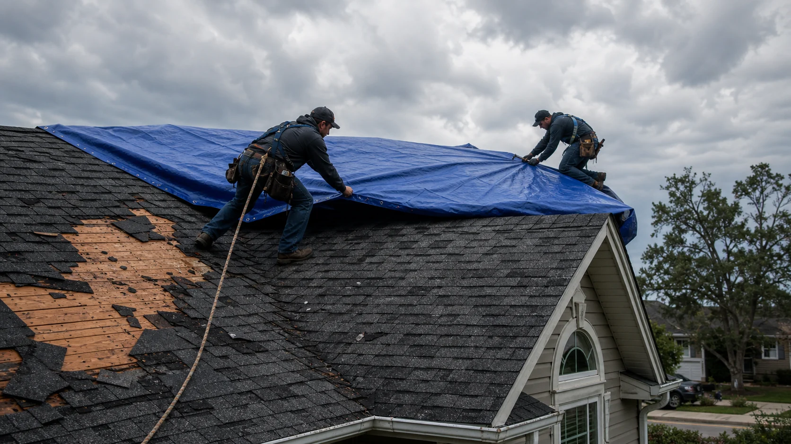

Storm review
Missing shingles, lifted tabs, hail bruising, punctures, displaced vents, and damaged flashing.
Route urgent requests for wind, hail, emergency covering, damage documentation, repair scopes, and restoration conversations.
High wind, hail, falling limbs, and driven rain can create openings that are hard to judge from the ground. The right follow-up may be temporary covering, a focused repair, documentation, or full restoration planning.
RoofLink helps users submit the urgent facts so independent storm providers can understand the property, damage type, and timing before contacting you.

These examples help you describe the request clearly before independent providers follow up.
Missing shingles, lifted tabs, hail bruising, punctures, displaced vents, and damaged flashing.
Tarping or weatherproofing for exposed decking, openings, or active water entry.
Photo documentation and repair recommendations that help homeowners discuss next steps clearly.
RoofLink helps organize the details. You still choose who to speak with, what to verify, and whether to hire.
Move valuables, capture photos, and avoid climbing onto a wet or damaged roof.
Share missing shingles, ceiling stains, gutter dents, debris impact, or temporary cover needs.
Ask what must be stabilized now and what can wait for a full inspection.
Use the scope discussion to compare repair, restoration, replacement, and timing.

Provider replies are useful when they help you understand scope, timing, risks, and next steps. Use the first conversation to ask direct questions before approving work.
Immediate safety planA provider should separate emergency weatherproofing from permanent repair decisions.
Damage documentationPhotos and plain notes help you understand what was found.
Permanent repair logicAsk whether the provider recommends targeted repair, larger restoration, or replacement and why.
Some roof problems are not emergencies, but these signs usually deserve faster provider follow-up.
Active leaks can multiply the cost of interior damage.
Wind damage can expose nail lines and let the next storm enter faster.
Branches, debris, and punctures can damage decking or hidden roof layers.